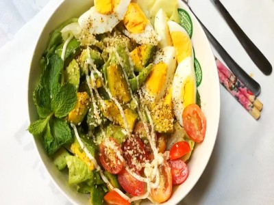

|  |
Food's name: Avocado egg salad▸ Ingredients:
▸ Time to prepare: 30 minutes ▸ Approx quantity: 1 bowl (serving for 1 person) |
|
▸ Detailed recipe:
Step 1: Boil the egg:
- Take 2 eggs and wash them thoroughly to remove the shell. Then put in a pot, cover with water and boil for 10 minutes.
- Then turn off the heat, put the eggs in a bowl of cold water for 2-3 minutes, peel the eggs, and put them in the bowl.
- Use a knife to cut each egg into 4 parts.
Step 2: Process materials:
- Cherry tomatoes washed, cut in half.
- Peel the avocado, then cut it into small squares.
- Lettuce leaves are washed with dilute salt water, then washed with clean water and cut into bite-sized pieces.
Step 3: Mix salad dressing:
- Put the ingredients in a bowl: 1 tablespoon olive oil, 1 tablespoon mayonnaise, 1/2 tablespoon vinegar, 1/2 teaspoon salt.
- Stir well, continue to add the juice of 1/4 lemon, continue to stir with a spoon to mix well.
Step 4: Shape the cake
- Put in the bowl of cherry tomatoes, lettuce, and sauce mixture just made. Use chopsticks to stir well to infuse the ingredients.
- Continue to add the butter and eggs to the bowl, stirring gently so that the butter and eggs do not break. Then add a little
roasted sesame, ground pepper, and garnish with mint leaves to make it fragrant and beautiful.
=> So you've got yourself a delicious and nutritious salad.
▸ Calories and related information: